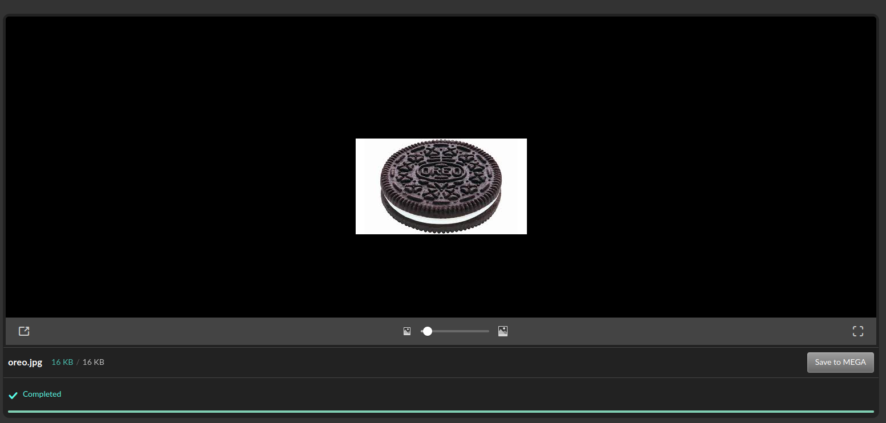
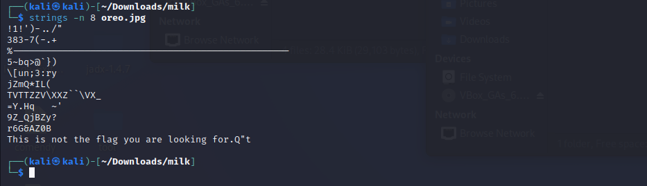
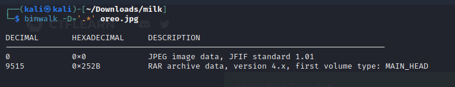
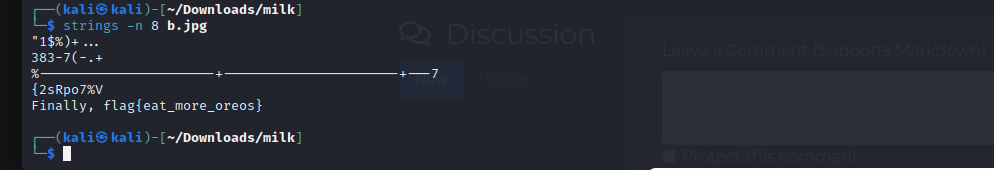

4 CTF z kategori forensics
2024-02-13
Milk's Best Friend było pierwszym zadaniem, plik który dostałem przedstawiał ciastko oreo
Rozpocząłem standardowo od sprawdzenia zawartości narzędziem strings ale dostałem tylko informacje że to nie tu.
Użyłem kolejnego często używanego narzędzie w tej kategori czyli binwalk które pokzało że zdjęcie oreo kryło w sobie kolejne zdjęcie tym razem przedstawiające już 2 ciastka oreo a przy okazji kryło w sobie też flagę
 Źródło: https://ctflearn.com/challenge/195
Następnym zadaniem było Digital Camouflage które zawierało plik z logami sieci które można wyświetlić w programie wireshark. Zadanie polegało na znalezieniu hasła do rutera.
Rozwiązałem je sposobem możliwe że mało efektywnym a mianowicie leciałem pokoleji po logach i szukałem podejrzanych rzeczy, takim okzało się pswrd=UEFwZHNqUlRhZq które wygląda jak sposób zapisania zaszyfrowanego hasła w zmiennej, co też okazało się prawdą i końcem zadania.

Hasło było bardzo prosto saszyfrowane bo po przez bardzo popularne szyfrowanie base64

Źródło: https://ctflearn.com/challenge/237
Trzecie zadanie pod tytułem Exclusive Santa okazało się chyba najciekwszych z dzisiaj prezentowanych. Do pobrania były dwa zdjęcia oraz komentarz do zadania który sugerował że te zdjęcia dadzą odpowiedź jeśli się je połączy.
Zacząłem na początku od skanowania obu zdjęć przez aplikacje Stegsolve którą poznałem kiedyś podczas roziwązywania innego zadania na tej stornie.

Aczkolwiek po dokładnym przejrzeniu obu próbowałem też nałożyć jeden na drugi ale to też nie dawało żadnego rezultatu. Wtedy dostrzegłem pewny drobiazg, a mianowicie zdjęcia nazywały się 1 oraz 3 co sugerowało że brakuje jednego który był konieczny do rozwiązania. Poraz kolejny użyłem narzędzia binwalk.

I odnalazłem zaginione zdjęcie

Po połączenie tego w programie Stegsolve ze zdjęciem numer jeden moim oczom ukazał sie w końcu poprawnie wyglądający obrazek

Źródło: https://ctflearn.com/challenge/851
Ostanim dzisiejszym wyzwaniem było Seeing is believing. Według fabuły trzeba było rozszyfrować wiadomość od który miał probelmy z komunikacją.
Jako że plik po otworzeniu ukazywał niezrozumiałe znaczki postanowiłem popatrzeć w jego wnętrze po przez hexedit

Tam odczytałem jego rozszerzenie jako OGGS, nic mi to nie mówiło ale po szybkim wygooglowaniu dowiedziałem się że jest to rozszerzenie używane wplikach audio dlatego tez plik wrzuciłem do programu Audacity

Jako że już kiedyś robiłem zadanie w którym flaga ukryta była w spectogramie była to pierwsza rzecz jaką sprawdziłem i ostania bo okazało się że kryje ona kod QR prowadzący do notanika w którym napisana jest flaga.

Źródło: https://ctflearn.com/challenge/441